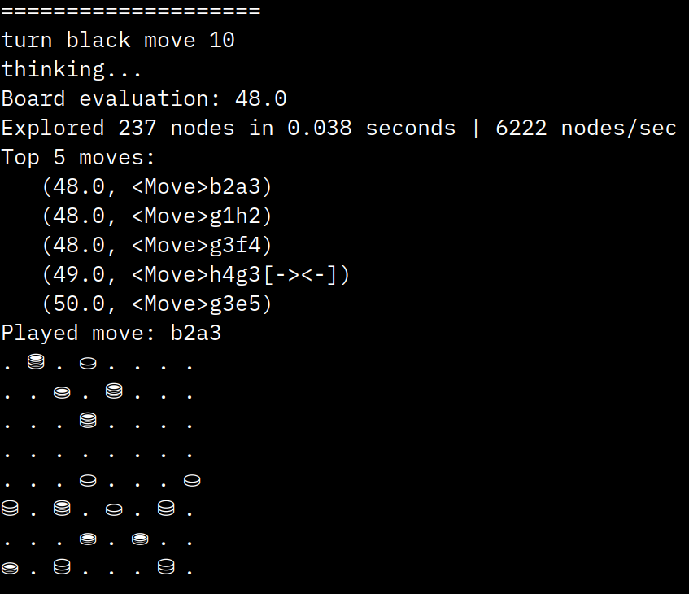

Impasse Game Engine¶
This is a documentation of the game engine implementation of Impasse. It has a pretty Unicode-based UI that run on terminal. After choosing the preferred game mode, the game starts and the player is asked to enter the move index, based on the list of legal moves.
Author: Foti Kerkeshi
Design¶
Color¶
color is a boolean data type, either True for the White player or False for the Black player
Piece¶
- PieceType
piece type is an integer data type, 1 for the single pieces, 2 for the double (stacked) pieces
- PieceSymbols, PieceNames
since the engine is a console app, the peice symbols are represented by the “⛀”, “⛁” and “⛂”, “⛃” UNICODE characters respectively for the black and white and black pieces for each of the piece types
(0 index of the list is skipped so to ease the element access using the PieceType (int) as indices)
Square¶
square is an int data type for each of the 64 squares, indices order is from left to right, with the bottom left square as index 0 and top right square as index 63
[Bitboard representation - ChessProgramming.org](https://www.chessprogramming.org/File:BBUniverse.jpg)
{kind=link}
Bitboard¶
one bitboard is an int 64-bit data type, in binary it represents in ones and zeros the occupied and free squares in the board (piece centric) there are needed only 4 bitboards (integers) to keep the state of the board at any time
the black squares bitboard
the white squares bitboard
the single squares bitboard
the double squares bitboard
bitwise conjuction (AND) of the above represents the board state
[+] Advantages
very very fast move generation
memory efficient
[-] Challenges
complicated moves need more thought and sometimes are hard to generate with bitwise operators
Piece¶
a piece consists of (piece_type, color)
Attributes
piece_type is a constant from the PieceType enum
color is a boolean, True for white, False for black
Methods
symbol method returns the unicode symbol of the piece
“⛀”, “⛁” and “⛂”, “⛃” - the __repr__ and __str__ methods return the unicode symbol of the piece
Move¶
a move consists of (from_square, to_square, transpose, bear_off, impasse, crown)
Attributes
from_square and to_square are integers from 0 to 63
transpose is a boolean, True if the move is a transpose
bear_off is a boolean, True if the move is a bear off
impasse is a boolean, True if the move is an impasse
crown is an integer from 0 to 63, the square where the piece is crowned
Methods
__repr__ and __str__ methods return the uci representation of the move
uci method returns the uci representation of the move e.g. “a1b1”, “a1b1[-><-]”, “a1b1[X][X]”, “a1b1[-><-][X][X]”
BoardState¶
a board state consists of (singles, doubles, occupied_w, occupied_b, occupied, turn)
Attributes
singles is a bitboard of the singles
doubles is a bitboard of the doubles
occupied_w is a bitboard of the white pieces
occupied_b is a bitboard of the black pieces
occupied is a bitboard of the occupied squares
turn is a boolean, True for white, False for black
Methods
restore method restores the board state to a board, useful for storing the board state before making a move, and restoring it after
Board¶
a board consists of (move_stack, stack, turn, occupied_co, singles, doubles, occupied)
Attributes
move_stack is a list of moves
stack is a list of board states
turn is a boolean, True for white, False for black
occupied_co is a list of bitboards of the white and black pieces
singles is a bitboard of the singles
doubles is a bitboard of the doubles
occupied is a bitboard of the occupied squares
Methods
legal_moves property returns the legal moves as a list
push method makes a move on the board and pushes the board state to the stack
pop method pops the last move from the move stack and restores the board state
board_state method returns the board state as a BoardState object
reset_board method resets the board to the starting position
piece_type_at method returns the piece type at a square
remove_piece_at method removes a piece from a square
set_piece_at method sets a piece at a square
piece_at method returns the piece at a square
get_backward_moves method returns the backward moves for white doubles and black singles
get_forward_moves method returns the forward moves for white singles and black doubles
generate_basic_moves method generates the basic moves (forward, backward, transpose and crown)
generate_impasse_moves method generates the impasse moves
generate_crown_moves method generates the crown moves
peek_for_crown method peeks for a crown move
crown_available method returns True if a crown move is available
perform_crown method performs a crown move
bearoff_available method returns True if a bear off move is available
transpose_available method returns True if a transpose move is available
generate_moves method generates all the legal moves (basic and impasse)
is_game_over method returns True if the game is over
side_removed_all_pieces method returns True if a side has removed all their pieces
print_board method prints the board to the console, using the unicode pieces, . for empty squares
Valuator¶
The valuator is used to evaluate the board state. It is used to determine the best move for the AI to make. The valuator is based on the following rules:
more single pieces in the furthest row for white, the better, and likewise more single pieces in the nearest row for black, the better
more double pieces in the nearest row for white, the better, and likewise more double pieces in the furthest row for black, the better
the more single pieces, the better
the less double pieces, the better
top_highest contains the value map for each square on the board for the pieces
that are valued more if they are in the furthest row - top_nearest contains the value map for each square on the board for the pieces that are valued more if they are in the nearest row - single_value is the value of a single piece - double_value is the value of a double piece - impasse_value is the value of an impasse move - crown_value is the value of a crown move - transpose_value is the value of a transpose move - singles_disadvantage is the difference in number of single pieces between the opponent and the current moving side - doubles_disadvantage is the difference in number of double pieces between the opponent and the current moving side - singles_map_array is the total value for each square on the board in accordance to the value map position of the piece - doubles_map_array is the total value for each square on the board in accordance to the value map position of the piece - evaluate is the total value of the board state
Game¶
Runs different game modes and AI search algorithm if needed
selfplay: plays against itself, moves can also be randomly chosen,
otherwise the best move is chosen - human_human: plays against another human, by printing each move to the console with its index, and asking for the index of the move to be played - human_AI: plays against the AI, by printing each move to the console with its index, and asking for the index of the move to be played - test_game: debugging environment - alphabeta_minimax: runs the alphabeta minimax algorithm - explore_leaves: initializes AI search environment with configs and runs the minimax algorithm and returns the best moves